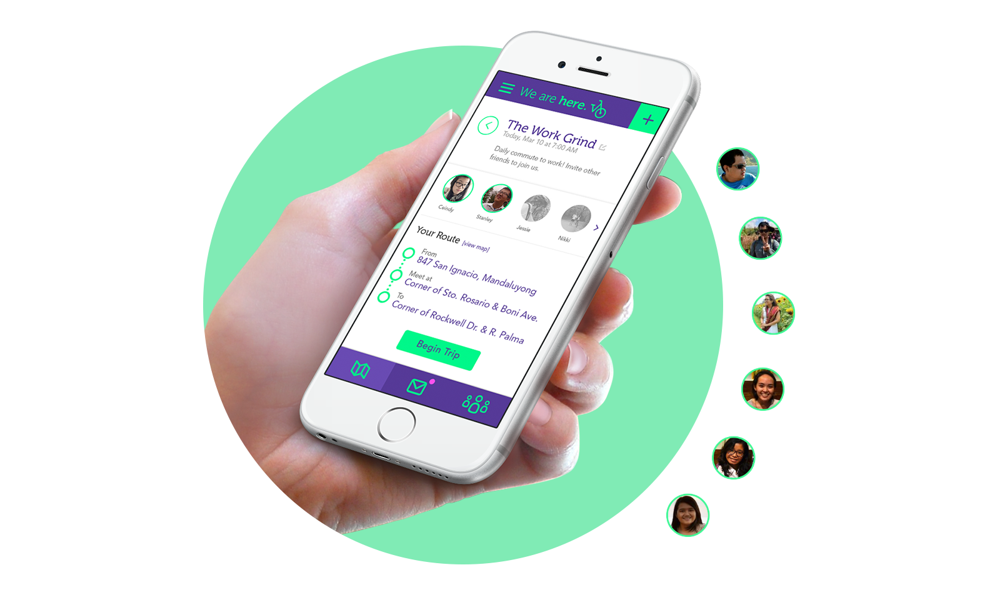
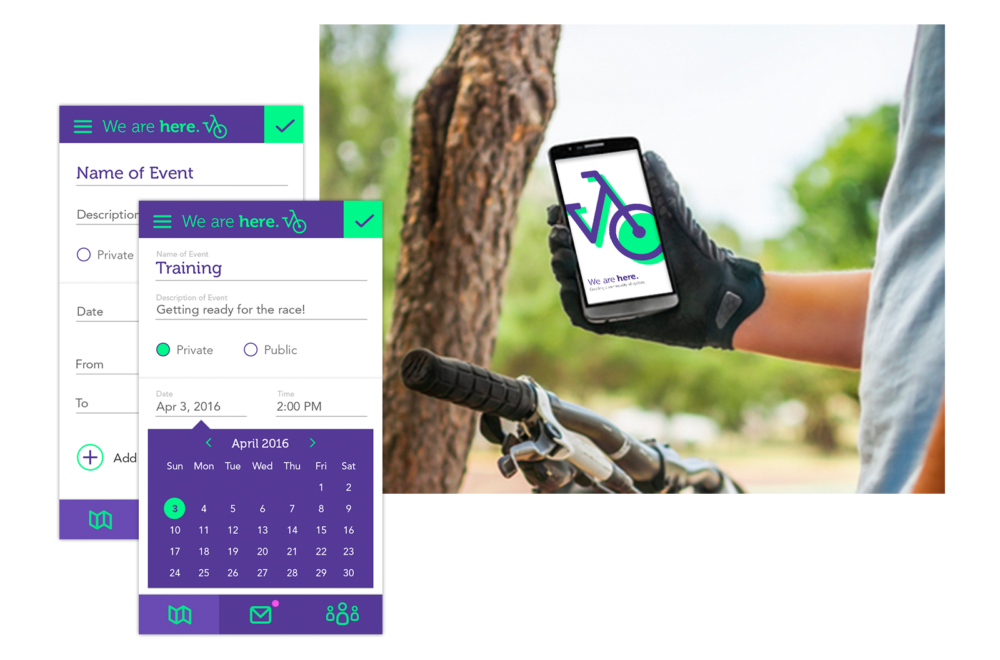
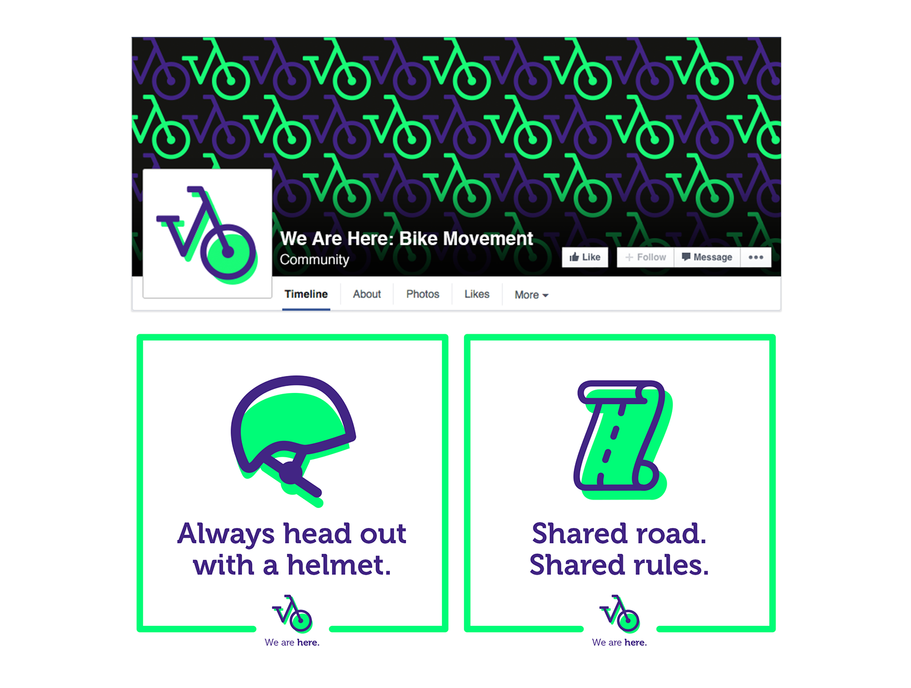
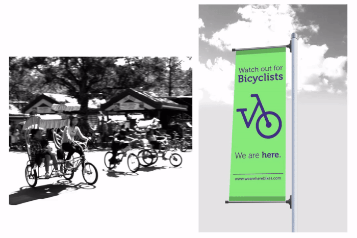
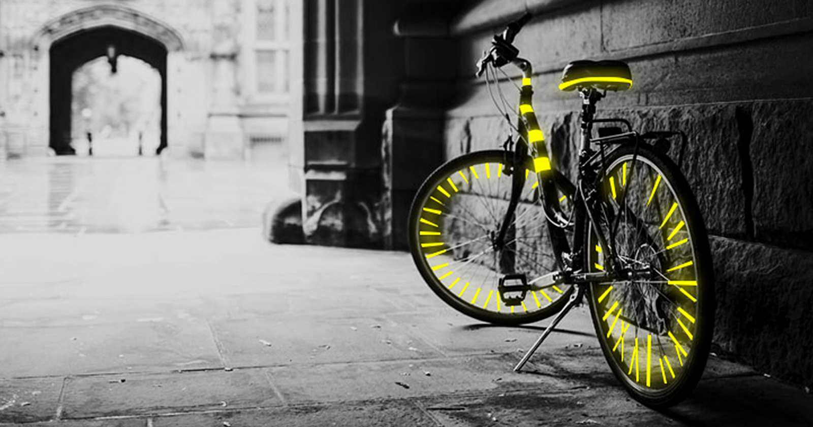
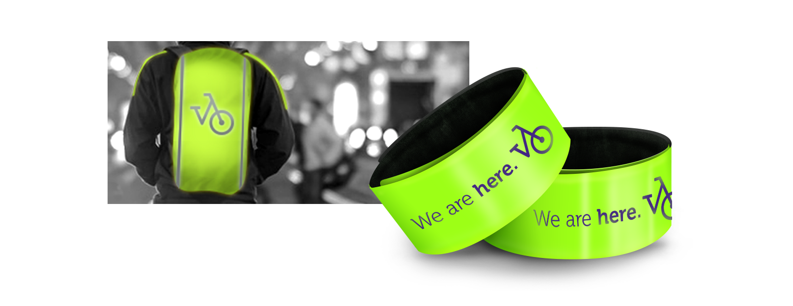

Cycling is one of the solutions to reduce carbon footprint and cut back on costs. However, there is a lack of awareness of bike rules and etiquette, which often leads to accidents—and even death. Instead of seeing a road to progress, people see risks, so they choose not to bike.
A study by Peter Jacobsen records instances wherein the drivers are more cautious when there are more bikers and pedestrians in the vicinity. There is safety in numbers, and encouraging people to bike together is the first step to changing mindsets.
We are here is a mobile application which connects friends and other bikers in the neighborhood who share the same route to places like work and school. The app establishes a common spot to meet up, and creates a route to an area near their destinations. This is great for established bike groups or simply for people who want to undertake a lifestyle change together.
Awards:
Lucille Tenazas Design Excellence Award
Silver: Adobo Design Awards
Featured in:
ABS CBN Lifestyle by Duey Guison
Manila Bulletin
Cyclists could see upcoming events and respond to invitations from friends, or browse for community bike rides in the area. They have the ability to create their own meetups and either mark them as private or public. The group rides together and is accountable towards the other, furthering the movement for better roads.
 We are here gives people the means to connect, but it is also a rallying cry to drive change. It is a message to motorists to be considerate to cyclists who deserve to be respected on the road. It is a call to fellow cyclists to be visible, as there are a lot of bikers who don’t have proper gear, who cycle without helmets, or wear dark clothing during nighttime. It is a declaration to both sides to be conscientious of each other if they want change.
A key aspect of creating a new culture is the education of the general public regarding proper bike practices. One way to do this would be a Facebook page for the movement, with posts which aim to inform people of bike rules. The logo, itself, reflects the call for visibility. It is a unique mark that could be used in different materials, and something literal and easily recognizable.
The movement takes to the streets with glow-in-the-dark posters placed in areas where bikers frequently pass. Data will be collected through the app.
Partnership with the local government would bring about events campaigning for visibility on the roads. On Sundays, they can close small roads to host community biking exercises and spread information. Bicycle-decorating booths will also be present, inviting people and kids to get creative with reflective tape and ensuring their safety. Reflective gear like backpack covers and wristbands could be distributed during the events.
 This was originally designed for the open call competition by Adobo Design Awards, founded by Adobo Magazine, the go-to source for everything happening in the Creative Industry in Asia. The prompt was to create a bold new world through design. The application won silver in the Mobile Open category and received the Lucille Tenazas Design Excellence Award, named after Lucille Tenazas: designer, educator, and AIGA medalist hailing from the Philippines and now based in the United States.
This is now a work-in-progress and in its early planning stages. If you are interested in learning more about the project and would like to help in any way, write me a note.